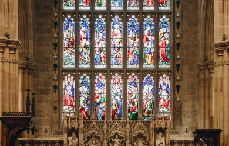

October 18th, 2008
The Trust was established on October 18th, 2008.
Apostolic Word of Faith Ministries & Trust was founded by Mr. Rev. D. Alexander, M.Div. The organization's Secretary is Sis. D.Jayamary and the Treasurer is Bro. D. David Prem Kumar.

Since 2018
Offering monthly food item donations
Since 2018, we have been offering monthly food item donations worth Rs 1000 to five families and visually impaired individuals.